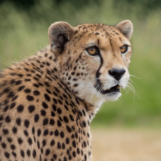
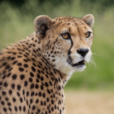

What is cheetah
The cheetah is a large cat and the fastest land animal. It has a tawny to creamy white or pale buff fur that is marked with evenly spaced, solid black spots.The head is small and rounded,with a short snout and black tear-like facial streaks.
 

Key Features
Physical Appearance:
Cheetahs have a slender, aerodynamic body with a golden-yellow coat covered in solid black spots. They have black tear-like streaks running from the inner corners of their eyes to their mouth, which help reduce sun glare and improve focus on prey.
Size: Adults weigh between 75-140 pounds (34-64 kg) and measure about 3.5-4.5 feet (1.1-1.4 m) in body length, with an additional 2-3 feet (0.6-0.9 m) for their long, balancing tail.
Unique Adaptations:
Their semi-retractable claws, lightweight frame, and enlarged nasal passages and lungs are all evolutionary adaptations that allow for explosive acceleration and efficient cooling during high-speed chases.
Habitat and Range
Cheetahs primarily inhabit grasslands, savannas, and open plains, where their camouflage and speed are advantageous for hunting. They are found mainly in sub-Saharan Africa, with small populations in Iran, though their historic range once spanned Asia, the Middle East, and Africa.
Diet and Hunting Behavior
Cheetahs are carnivorous predators that rely on speed rather than stealth. They primarily hunt small to medium-sized herbivores, such as gazelles, impalas, and hares. Their hunting strategy involves stalking prey until within 100-200 feet (30-60 meters) before initiating a high-speed chase. Cheetahs are diurnal hunters, active during the day to avoid competition with larger predators like lions and hyenas.

Social Structure
Cheetahs are relatively solitary animals, but males sometimes form small groups called coalitions, often made up of siblings. Females are more solitary, living alone except when raising cubs. Mothers are highly devoted, teaching their cubs essential survival skills over a period of 18-24 months.


Reproduction
Female cheetahs typically give birth to 3-6 cubs after a gestation period of about three months. Cheetah cubs have a distinctive "mantle" of silvery-gray fur along their backs, providing camouflage and protection from predators during their vulnerable early months.
Conservation Status
Cheetahs are classified as Vulnerable by the International Union for Conservation of Nature (IUCN). Threats include:
Habitat Loss: Human encroachment and land development have drastically reduced their natural habitats.
Human-Wildlife Conflict: Livestock predation often leads to retaliation by farmers.
Low Genetic Diversity: Cheetahs have extremely low genetic variation, making them more susceptible to diseases and environmental changes.